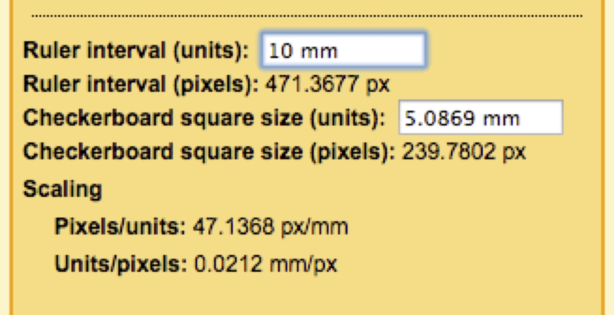

3.4 Measuring square size using a ruler
This section will show you how to precisely measure the square sizes in a checkerboard pattern using an independent standard such as a ruler. The previous section demonstrated how to calculate the size of printed squares based on the size of the squares in pixels, the DPI and the scaling. For most applications that should predict the size of the squares fairly well. But if your setup requires exceptionally high accuracy or you are unsure about the accuracy of your printer, you can follow the steps in this section.
1. Find a ruler. The required precision of the ruler will depend on the application. A standard office ruler should work well for most applications. If you require high accuracy, you can use a precision ruler. For this tutorial I used a 12" Single "A" - #46-IM precision rule by Schaedler (approximately $30, including tax and shipping), which has an accuracy tolerance of better than 0.00024".

2. Take a photograph of the ruler and the checkerboard pattern so that they are both visible in the image.
There are few important points when taking the photograph:
- Make sure that the entire checkerboard pattern falls within the image.
- Use a camera lens with minimal lens distortion. For the above image, I used an 18-55mm zoom lens zoomed in all the way to 55mm. At 18mm the lens would have significant barrel distortion but zoomed in to 55mm the distortion is negligible.
- Position the camera and checkerboard so that the checkerboard is approximately coplanar with the image plane or the end of the camera lens (i.e. the long-axis of the lens should be at a right angle to the checkerboard). If the checkerboard is at an angle relative to the image plane, some squares will be closer to the image plane than others, resulting in a difference in size on the imaging plane (this is the perspective effect).
- For the same reason, the ruler should be in the same plane as the checkerboard pattern. If the ruler has some depth to it, raise the checkerboard so that it is coplanar with the points you'll be digitizing on the ruler.
- Position the ruler so that it is not at the very edge of the image. It is not possible to eliminate lens distortion entirely when taking a photograph and the edges will generally have the highest distortion. So it is best to keep everything being measured away from the edges.
3. Upload the photograph of the checkerboard and ruler to your computer. Be sure the image name does not contain commas or periods. If you'd like to work through the example below, you can download an example image, "7x6.jpg" here (0.3 MB). Note that this checkerboard is slightly different from the one we created earlier. It has 7x6 internal corners and the square size in the image was 144 pixels (printed at 10% scaling). Save this image to your R working directory.
4. Load the StereoMorph library if it isn't already loaded.
# Load the StereoMorph library library(StereoMorph)
5. All of the remaining steps will be performed within the StereoMorph digitizing application. This is a browser-based application for manually digitizing landmarks and curves in photographs.
The application is launched from R and opens in your default web browser; you do not need to be connected to the internet to launch the app (it runs on an internal server). To launch the app, use the function digitizeImages() with the following parameters: image.file (an image or folder of images to be digitized) and shapes.file (a file or folder where the digitized data will be saved). Using the example image, "7x6.jpeg", the function call looks like this:
# Open the digitizing application digitizeImages(image.file='7x6.jpg', shapes.file='7x6.txt')
Once the app launches you should see the image on the left side of the window and a control panel on the right side. The Digitizing photographs section will explain the features of the app in more detail. For this section we will just measure the checkerboard square size and digitize points on the ruler.
6. Click on the "Scaling" tab in the right upper corner of the window.
7. In the text field to the right of "Internal corners", enter the number of internal corners along each dimension of the checkerboard, separated by a comma, and click "Find Checkerboard".
The StereoMorph function findCheckerboardCorners() will then automatically detect the internal corners of the checkerboard. This can take up to 20-30 seconds depending on the size of the image. Once these have been detected, yellow dots and lines will be displayed on top of the image with a small "1" indicating the first corner.
Note that for measuring the square size, the order in which the corners are detected doesn't matter. However, the order will become important later during the calibration step. Also, you'll see in the Scaling panel that the square size (in pixels) is measured once the corners are detected.
8. To get the square size in millimeters, all we need now is the conversion factor from pixels to millimeters (i.e. how many millimeters correspond to a single pixel in the image). Select "Ruler point 1" in the Scaling panel in order to set this as the current landmark.
9. Then move your cursor to the ruler mark at 12 cm in the image and double-click. This will create a landmark at that position.
You can zoom in and out of the image by scrolling and you can move around the image by clicking and dragging the image with the mouse. If you want to change the position of the landmark, first make sure the landmark is selected by double-clicking on the landmark or clicking on the row in the Scaling panel (the landmark will turn from blue to green). Then click and drag the landmark with the mouse or use the arrow keys to move by a pixel at a time. To delete a landmark, first select the landmark and then press 'd'.
10. Digitize an addition 5 ruler points, selecting them in the Scaling panel and then placing them at the marks for 11, 10, 9, 8 and 7 cm. Every time you add a ruler point, the app will automatically create a new row in the ruler point table. The app will also continually update the corresponding ruler interval (in pixels) as you add or change ruler points.
11. In the Scaling panel, enter the distance between each consecutive ruler point with the units, in this case 10 mm. The app will calculate the checkerboard square size and this will be displayed to the right of "Checkerboard square size (units)".
In this case, the measured square size is 5.0870 mm (your results will likely differ a bit because you are unlikely to digitize the exact same pixel coordinates). For this 7x6 checkerboard, the square size was 144 pixels and the checkerboard was printed at 10% scaling. Based on the equations for based on the DPI and printer scaling we would expect the printed square size to be 0.2 inches (5.08 mm). Note that our precision measurement differs by only 0.007 mm (7 microns) from what we expected. If you select a different ruler interval, select different points on the ruler, etc. you are likely to get a slightly different measurement but in general these measures should not differ by more than 0.2% of the square size.
Note also that in addition to calculating the size of the checkerboard, the scaling panel tells you the size of each pixel in the units you specify. In this case, each pixel is about 0.021 mm wide (21 microns). You won't be able to measure the checkerboard square size much below this threshold since you can't digitize at a resolution smaller than a pixel. However, by sampling many points on the ruler it's possible to achieve a slightly higher resolution than the pixel resolution. We'll see later that the checkerboard corner detection also uses local image sampling around the corner to achieve a resolution greater than the pixel resolution.
12. Click "Save" to save the checkerboard corners, ruler points and scaling data to the file you specified using the shapes.file parameter. If you'd like to refer back to the square size measurement you can read either re-launch the digitizing app using digitizeImages() with the same input parameters (all of the saved data will be loaded in) or you can read the shape file directly. StereoMorph uses a custom XML-like format to save these data; you'll find the checkerboard square size saved within the "square.size" tag in the shapes file.